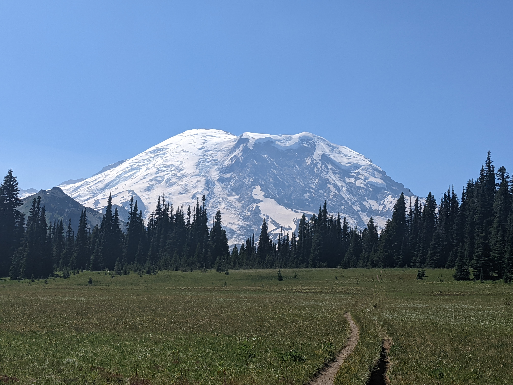

Grand Park
Grand Park is a huge flat meadow. It is the flattest area on Mt. Rainier.
Location: Sunrise/Grand Park
Visited: August 11, 2022 at 12:41 PM
Grand Park is a huge flat meadow. It is the flattest area on Mt. Rainier.
Location: Sunrise/Grand Park
Visited: August 11, 2022 at 12:41 PM